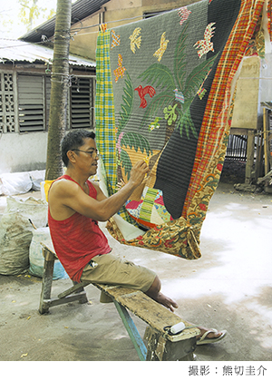

カオハガンキルト
1992年、日本を離れ、フィリピン、セブ島の南の海に浮かぶ周囲2キロたらずの小島「カオハガン」に住むことになった。
周囲を海に囲まれ、自給自足で暮らす島民たちのシンプルな生活は、物で溢れかえった日本からやってきた私に、大きな感動をもたらしてくれた。
そんな島の女性たちにパッチワークを教えてみたいと思うようになった。
しかし誰もがまったく関心をしめしてくれない。
そんな中で一人の女性だけが作り始めた。
ある日、型紙も定規も使わずに作った彼女のキルトを買い上げたのがきっかけとなり、キルト作りがスタートした。
その方法論は、日本や欧米での作り方とは違う。
やっかいな製図をしなくてもすみ、規制もないので、布を適当にカットした後は、自由に縫っていくだけ。
同じ大きさのパターン(幾何学模様で構成された四角い形の布)は作りにくいが、布を縫い合わせる時に、お互いのサイズが違っていると、大きい方を迷わずカットしたり、小さい方に布を足したりしているうちに、思ってもいないデザインが生まれてくる。
1997年、日本で初めての展示をしたところ、多くの方からオーダーをいただき、本格的にキルト作りが始まった。
最初はピースワーク(小さな四角、三角を縫い合わせて幾何学模様をつくる方法)で作っていた彼らも、しだいにもっと自由に表現できるアツプリケ(布の上に布をのせ周囲をまつりつける方法)を好むようになっていった。
彼らの描く情景には、島にある木や花、猫や犬、広い海の中を泳ぐ魚たち、そして自由に空を飛ぶ鳥などが登場する。
配色にしても彼らは私たちのように深くは考えない。
しかし、カオハガンの人たちは配色を学ぶ必要はなく、すでに生まれつき美しい色の組み合わせができる能力がそなわっているようなのだ。
それは豊かな自然の中に生まれた人たちの「特権」なのだろうか。
そんな人たちが作るキルトは、誰からも、そして何からも学ぶことはなく、年々洗練されたデザインや配色の才能を発揮していく。
カオハガンキルトはすべてが曲がっていて同じ形がないのが特徴だ。
日本の美しく整然としたキルトに物足りなさを感じていた私は、ずっと捜し求めてきたキルトと出会えたような気がした。
型紙を作ったり、できあがりのデザインを最初からきめずに作れば、のびやかで素直なキルトが出来上がる。
カオハガンキルトを見ていると「自然が作ったものに直線はない」ということがよく分かる。
この島で、もし私が日本や欧米での作り方を彼らに教えていたらどうなっていたのだろう。
それはそれなりに美しいキルトは出来上がっていたことと思うが、「カオハガンキルト」という特異なキルトは見ることができなかったことだろう。
私は世の中に「キルト」というものがあることを伝えただけ。
後は自然発生的に出来上がってきたのだ。
キルト作りを伝えていくことで大変だったことは、楽な作り方がわかっていても知らないふりをしなればならなかったこと。
だからこそ彼らが自分で考えながら作り上げていったキルトはどれもが素晴らしく、そして私にはアドリブのきいたジャズ感覚のように感じられるのだ。
吉川順子プロフィール
セツ・モードセミナーにてスタイル画を学ぶ。その後、服飾デザイナー、アーキテクチュラル・レンダラー(建築の完成予想図を描く仕事)を経て、1985年、パッチワーク・スクール「ハーツ＆ハンズ」の講師となる。1990年、「ハーツ＆ハンズ」の校長に就任、1992年退職。
その後フィリピンの小島カオハガンに移り住む。1996年からカオハガンでキルト製作の指導を開始。1997年からは各地で開催される「インターナショナル・キルトウィーク」主催の展示、販売に参加。以降、カオハガン・キルトの販売に専念する。
カオハガンキルト 沿革
- 1996年
- 1992年から島に住み始めた吉川順子がきっかけとなり、島民たちによるキルト作りが始まる。
- 1997年11月
- 「カオハガンキルト」が、インターナショナル・キルトウィーク主催の横浜の国際キルト展に初めて招待される。
以後毎年、各地で開催されるインターナショナル・キルトウィークやギャラリー等で展示・販売を行う。 - 1999年7月
- 吉川順子の著書『カオハガン・キルト物語』（文化出版局）が出版される。
- 2005年1月
- キルターの共同制作所、展示販売所である「キルト小屋」が完成。キルト販売の収入で建てられた。
- 2009年1月
- アメリカのネブラスカ大学内の「インターナショナル・キルト・スタディ・センター」にカオハガンキルトが永久保存される。
- 2009年10月
- 立命館国際平和ミュージアムで「フィリピン・カオハガンキルト展：持続可能な経済的自立のあゆみ」が1ヶ月間開催される。（図録：『カオハガンのキルトたち』）
- 2012年4月
- フランス・ナントで開催された国際的なキルト展に出展、作品を展示・販売する。
- 2012年4月〜6月
- 長野県北アルプス展望美術館にて「南の島のアートな暮らし－カオハガンのキルト展－」を約2ヶ月間開催。
約100枚のキルトを展示、カオハガン島のキルター2名が来日して、会場でキルト制作を披露。（図録：『カオハガンキルト』） - 2012年12月
- 八日市図書館にて「南の島でチクチクチク、カオハガンキルト展」が約1ヶ月間開催される。
- 2013年4月
- 東京都美術館で開催された日本現代工芸美術展で、カルメリータ・アイング作のカオハガンキルト「黒い丸」が出展される。
- 2013年6月
- 新潟県政記念館にて「カオハガンキルト展」を開催。
現在、島の100人近くがキルターとして働き、今では、島の総現金収入の約3分の1を占め、家計を大きく支えている。近隣の2つの島でもキルトづくりが広まっている。